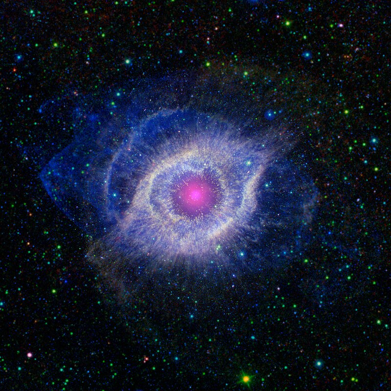
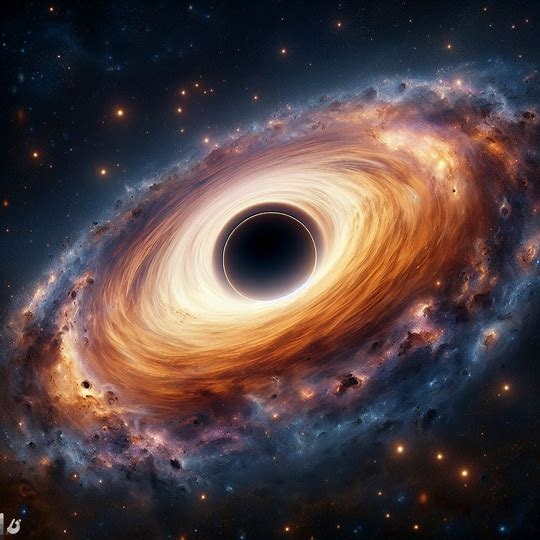

Example



Markup
<section class="main-section" id="main-section">
<div class="parallax-layer layer5">
<article class="tekst">
Supernova to ogromne i gwałtowne zjawisko astronomiczne, które
następuje w wyniku gwałtownej eksplozji gwiazdy. Podczas supernowej
dochodzi do wyzwolenia ogromnych ilości energii, które sprawiają, że
gwiazda staje się na krótki okres jasniejsza niż cała galaktyka, w
której się znajduje. Proces ten może trwać kilka dni lub nawet
tygodni, podczas których supernova emituje ogromne ilości światła i
innych promieniowań. Supernowe są kluczowym elementem w kosmicznym
krajobrazie, ponieważ wytwarzają i rozprzestrzeniają liczne
pierwiastki, które są niezbędne do formowania nowych gwiazd i planet.
</article>
<div class="parallax-layer layer6">
<img alt="super nowa" class="image-main" src="assets/supernowa.jpg" />
</div>
</div>
<div class="parallax-layer layer5">
<div class="parallax-layer layer6">
<img alt="mgławica ślimaka" class="image-main" src="assets/Mglawica_Slimak.jpg" />
</div>
<article class="tekst">
Mgławica Ślimaka, znana również jako M1 lub NGC 1952, to jedna z
najbardziej znanych i obserwowanych mgławic planetarnych. Została
odkryta przez francuskiego astronoma Charles'a Messiera w 1771 roku.
Jej nazwa pochodzi od charakterystycznego spiralnego wzoru, który
przypomina skręconą muszlę ślimaka. Mgławica Ślimaka znajduje się w
konstelacji Byka i jest pozostałością po eksplozji gwiazdy, która
miała miejsce około 6 000 lat temu. Dziś stanowi fascynujący obiekt
badawczy, pozwalając naukowcom zgłębiać tajemnice ewolucji gwiazd i
kosmicznych zjawisk.
</article>
</div>
<div class="parallax-layer layer5">
<article class="tekst">
Czarne dziury to tajemnicze obiekty astronomiczne, których grawitacja
jest na tyle silna, że nawet światło nie jest w stanie uciec z ich
obszaru, dlatego są one nazywane "czarnymi". Wewnętrzna struktura
czarnej dziury skrywa punkt o nieskończenie skupionej masie, zwany
singularnością, otoczoną horyzontem zdarzeń, czyli granicą, za którą
nie ma już powrotu. Choć są fascynującym obiektem badawczym, ich
natura nadal stanowi głęboką zagadkę dla astronomów.
</article>
<div class="parallax-layer layer6">
<img alt="Czarna dziura" class="image-main" src="assets/czarnadziura.jpg" />
</div>
</div>
</section>
Source:
style.css, line 760